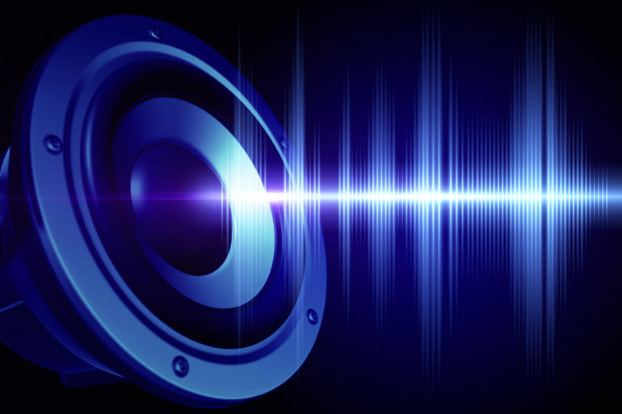

Description about Filters
A lowpass filter allows frequencies below the cutoff frequency to pass through and attenuates frequencies above the cutoff.
A highpass filter is the opposite of a lowpass filter. Frequencies above the cutoff frequency are passed through, but frequencies below the cutoff are attenuated.
A bandpass filter allows a range of frequencies to pass through and attenuates the frequencies below and above this frequency range.
Bandpass implements a second-order bandpass filter.
The notch filter (also known as a band-stop or band-rejection filter) is the opposite of a bandpass filter. It allows all frequencies through, except for a set of frequencies.
An allpass filter allows all frequencies through, but changes the phase relationship between the various frequencies.
Allpass implements a second-order allpass filter.
Description about Sound Files

An audio file format is a file format for storing digital audio data on a computer system. The bit layout of the audio data (excluding metadata) is called the audio coding format.
Itcan be uncompressed, or compressed to reduce the file size, often using lossy compression. The data can be a raw bitstream in an audio coding format, but it is usually embedded in a container format or an audio data format with defined storage layer.A lossless compressed format stores data in less space without losing any information. The original, uncompressed data can be recreated from the compressed version.
Uncompressed audio formats encode both sound and silence with the same number of bits per unit of time. Encoding an uncompressed minute of absolute silence produces a file of the same size as encoding an uncompressed minute of music. In a lossless compressed format, however, the music would occupy a smaller file than an uncompressed format and the silence would take up almost no space at all.
Lossless compression formats include the common FLAC, WavPack, Monkey's Audio, ALAC (Apple Lossless). They provide a compression ratio of about 2:1 (i.e. their files take up half the space of PCM). Development in lossless compression formats aims to reduce processing time while maintaining a good compression ratio.